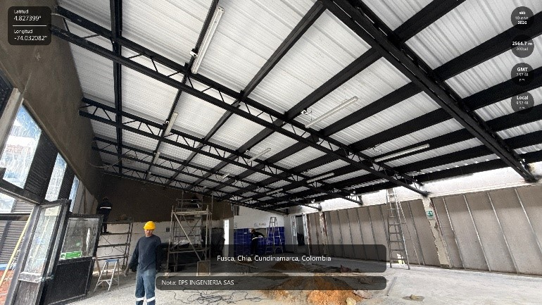
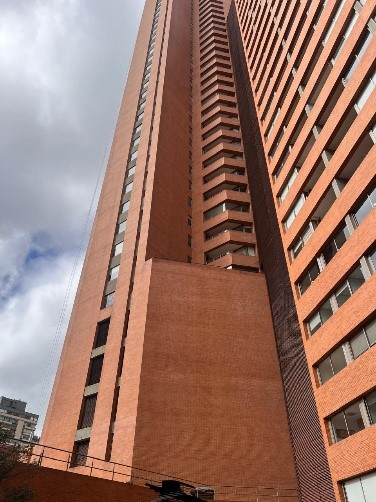
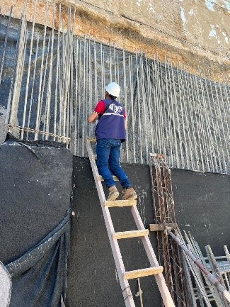
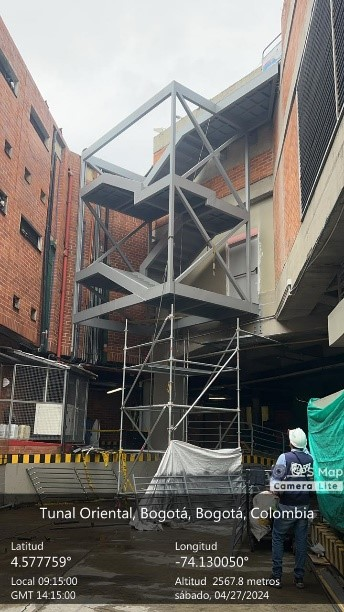
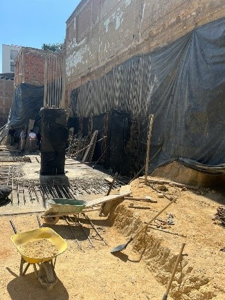
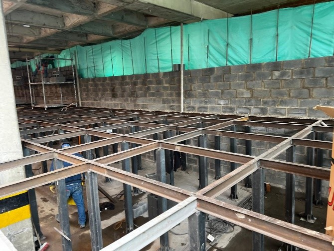

Inspección en campo
Inspecciones técnicas, levantamientos y verificación de procesos constructivos. Identificación de patologías y evaluación de vulnerabilidad estructural.
Supervisión técnica, interventoría, evaluación de vulnerabilidad y conceptos estructurales. Convierto la información de campo en decisiones técnicas confiables.
Soy Ingeniero Civil de la Universidad Católica de Colombia, con más de cuatro años de experiencia en supervisión técnica, interventoría y evaluación de vulnerabilidad estructural.
He participado en proyectos de reforzamiento, diagnóstico de patologías e inspección de edificaciones existentes, donde combino el trabajo en obra con la gestión técnica y administrativa que exige cada proyecto.
Soy Coordinador de Trabajo en Alturas y actualmente curso una especialización en Gerencia de Obras, para integrar la ejecución técnica con la planeación y el control de proyectos. Me defino como una persona organizada, analítica y detallista, enfocada en entregar información útil para tomar decisiones.
Control, inspección y seguimiento de obras nuevas y estructuras existentes, con información técnicamente respaldada en cada etapa.
Inspecciones técnicas, levantamientos y verificación de procesos constructivos. Identificación de patologías y evaluación de vulnerabilidad estructural.
Apoyo en el diagnóstico y seguimiento de reforzamientos: interpretación de planos y control de la correcta ejecución de las soluciones.
Elaboración de conceptos técnicos sobre el estado y la seguridad de una estructura, con recomendaciones claras para intervenir, reforzar o continuar su uso.
Reportes y análisis claros a partir de la información de campo, apoyados en AutoCAD, Revit y Microsoft Project.
Mi compromiso: convertir los datos de campo en decisiones técnicas seguras, con orden, rigor y cumplimiento.





